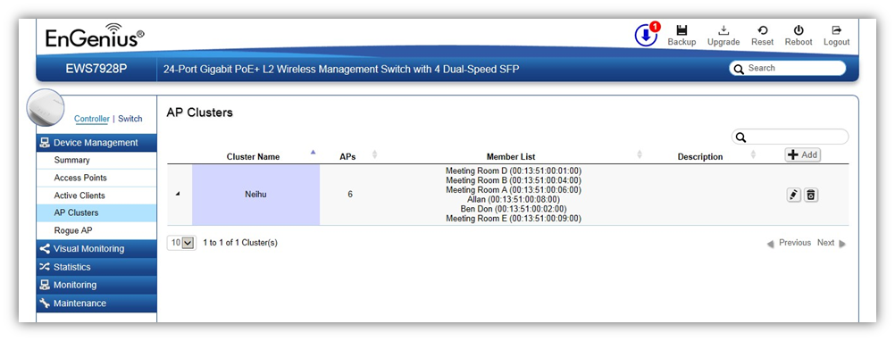
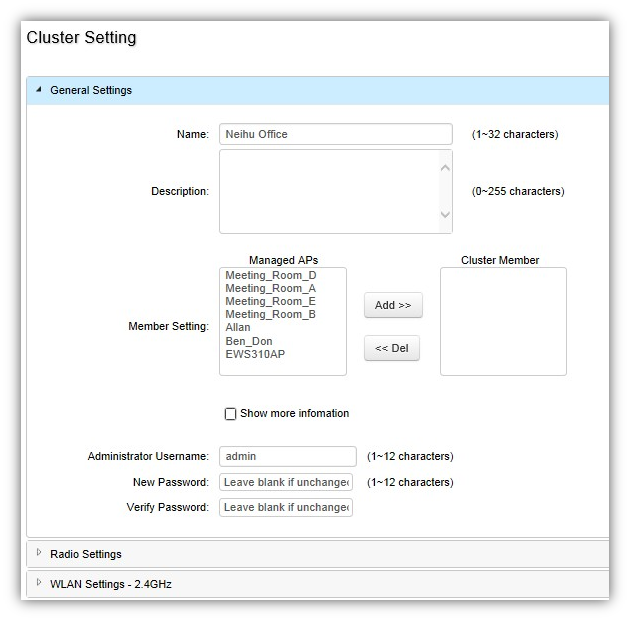

Device Management > AP Clusters
An Access Point Cluster can be used to define configuration options and apply them to a number of APs at once without having to modify the settings of each AP individually. A cluster provides a single Access Point to manage the group of Access Points as a single wireless network instead of a series of separate devices.

Creating a New Cluster
Follow the steps below to create a new cluster.
1. Click on Add button to create a new cluster.

2. Enter the name and description of the new cluster.
3. In the Member Setting section, all Access Points that are managed by the EWS Switch that are not currently assigned to a cluster will be listed on the left. Select the Access Points you wish to assign to this cluster and press Add. The Access Points will be moved to the right column.
4. Configure Radio, WLAN, and Advanced settings then click on Apply for settings to take effect.
Search Bar
Use the Search Bar to search for clusters in the list using the following criteria: Cluster Name, AP MAC, AP Name, Description.

Add Button
Use the Add Button to create a new cluster.

Edit Button
Use the Edit Button to edit the configurations of the cluster.

Delete Button
Use the Delete Button to remove a cluster.

Created with the Personal Edition of HelpNDoc: Single source CHM, PDF, DOC and HTML Help creation